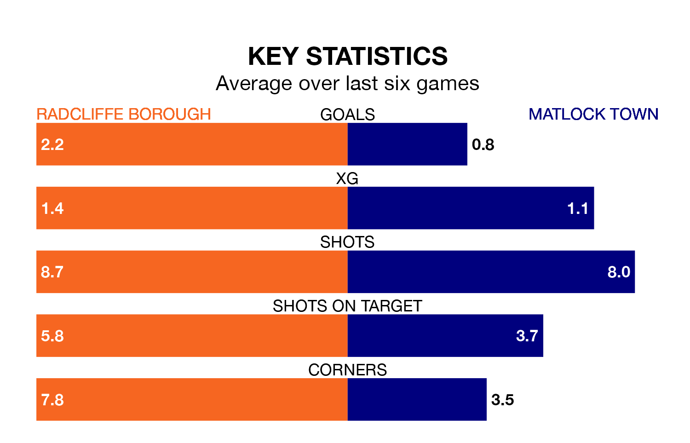

Radcliffe Borough are heavy favourites to keep all three points at home in Saturday's kick-off against Matlock Town.
The Boro, who sit top of the Northern Premier League with 36 games played, are priced at 1.2 to seal victory at the Stainton Park Stadium.
Sitting 13 places and 36 points behind them in the table, Matlock are 6.6 to win with *Betting Company*, while the draw is at 4.8.
With 95 goals in 36 games so far this season, Radcliffe are the league's highest scorers with 2.6 goals per game. And they are conceding fewer than average, letting in 54 goals at a rate of 1.5 per game.
Matlock, meanwhile, are average scorers, with 1.6 goals per game. They have conceded 1.8 goals per game.
Borough are in reasonable form in the Northern Premier League, with four wins and two losses from their last six games.
With a win and five losses over that period, Town's form is much worse – they have taken three points from 18, compared to the Boro's 12.
In the last 10 years, Radcliffe and Matlock have played each other on seven occasions. Radcliffe won two of them, Matlock three, and they drew twice.
On average, the Boro scored 0.6 goals and Matlock 1.6 in those matches.
Their last meeting was on November 4, when Matlock won 4-0 at home.
Radcliffe's last match was on Monday, a 3-2 win against Bradford Park Avenue.
Matlock lost 2-1 against Ilkeston Town last time out, also on Monday.
Updated: 16:41 (UTC), 04/04/24